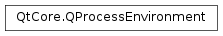

QProcessEnvironment¶
Note
This class was introduced in Qt 4.6.
Detailed Description¶
The
PySide2.QtCore.QProcessEnvironmentclass holds the environment variables that can be passed to a program.A process’s environment is composed of a set of key=value pairs known as environment variables. The
PySide2.QtCore.QProcessEnvironmentclass wraps that concept and allows easy manipulation of those variables. It’s meant to be used along withPySide2.QtCore.QProcess, to set the environment for child processes. It cannot be used to change the current process’s environment.The environment of the calling process can be obtained using
QProcessEnvironment.systemEnvironment().On Unix systems, the variable names are case-sensitive. Note that the Unix environment allows both variable names and contents to contain arbitrary binary data (except for the NUL character).
PySide2.QtCore.QProcessEnvironmentwill preserve such variables, but does not support manipulating variables whose names or values cannot be encoded by the current locale settings (seeQTextCodec.codecForLocale).On Windows, the variable names are case-insensitive, but case-preserving.
PySide2.QtCore.QProcessEnvironmentbehaves accordingly.
-
class
PySide2.QtCore.QProcessEnvironment¶ -
class
PySide2.QtCore.QProcessEnvironment(other) Parameters: other – PySide2.QtCore.QProcessEnvironmentCreates a new
PySide2.QtCore.QProcessEnvironmentobject. This constructor creates an empty environment. If set on aPySide2.QtCore.QProcess, this will cause the current environment variables to be removed.Creates a
PySide2.QtCore.QProcessEnvironmentobject that is a copy ofother.
-
PySide2.QtCore.QProcessEnvironment.clear()¶ Removes all key=value pairs from this
PySide2.QtCore.QProcessEnvironmentobject, making it empty.
-
PySide2.QtCore.QProcessEnvironment.contains(name)¶ Parameters: name – unicode Return type: PySide2.QtCore.boolReturns
trueif the environment variable of namenameis found in thisPySide2.QtCore.QProcessEnvironmentobject.
-
PySide2.QtCore.QProcessEnvironment.insert(name, value)¶ Parameters: - name – unicode
- value – unicode
Inserts the environment variable of name
nameand contentsvalueinto thisPySide2.QtCore.QProcessEnvironmentobject. If that variable already existed, it is replaced by the new value.On most systems, inserting a variable with no contents will have the same effect for applications as if the variable had not been set at all. However, to guarantee that there are no incompatibilities, to remove a variable, please use the
PySide2.QtCore.QProcessEnvironment.remove()function.
-
PySide2.QtCore.QProcessEnvironment.insert(e) Parameters: e – PySide2.QtCore.QProcessEnvironmentThis is an overloaded function.
Inserts the contents of
ein thisPySide2.QtCore.QProcessEnvironmentobject. Variables in this object that also exist inewill be overwritten.
-
PySide2.QtCore.QProcessEnvironment.isEmpty()¶ Return type: PySide2.QtCore.boolReturns
trueif thisPySide2.QtCore.QProcessEnvironmentobject is empty: that is there are no key=value pairs set.
-
PySide2.QtCore.QProcessEnvironment.keys()¶ Return type: list of strings Returns a list containing all the variable names in this
PySide2.QtCore.QProcessEnvironmentobject.
-
PySide2.QtCore.QProcessEnvironment.__ne__(other)¶ Parameters: other – PySide2.QtCore.QProcessEnvironmentReturn type: PySide2.QtCore.boolReturns
trueif this and theotherPySide2.QtCore.QProcessEnvironmentobjects are different.See also
PySide2.QtCore.QProcessEnvironment.operator==()
-
PySide2.QtCore.QProcessEnvironment.__eq__(other)¶ Parameters: other – PySide2.QtCore.QProcessEnvironmentReturn type: PySide2.QtCore.boolReturns
trueif this and theotherPySide2.QtCore.QProcessEnvironmentobjects are equal.Two
PySide2.QtCore.QProcessEnvironmentobjects are considered equal if they have the same set of key=value pairs. The comparison of keys is done case-sensitive on platforms where the environment is case-sensitive.See also
PySide2.QtCore.QProcessEnvironment.operator!=()PySide2.QtCore.QProcessEnvironment.contains()
-
PySide2.QtCore.QProcessEnvironment.remove(name)¶ Parameters: name – unicode Removes the environment variable identified by
namefrom thisPySide2.QtCore.QProcessEnvironmentobject. If that variable did not exist before, nothing happens.
-
PySide2.QtCore.QProcessEnvironment.swap(other)¶ Parameters: other – PySide2.QtCore.QProcessEnvironmentSwaps this process environment instance with
other. This function is very fast and never fails.
-
static
PySide2.QtCore.QProcessEnvironment.systemEnvironment()¶ Return type: PySide2.QtCore.QProcessEnvironmentThe function returns the environment of the calling process.
It is returned as a
PySide2.QtCore.QProcessEnvironment. This function does not cache the system environment. Therefore, it’s possible to obtain an updated version of the environment if low-level C library functions likesetenvorputenvhave been called.However, note that repeated calls to this function will recreate the
PySide2.QtCore.QProcessEnvironmentobject, which is a non-trivial operation.See also
-
PySide2.QtCore.QProcessEnvironment.toStringList()¶ Return type: list of strings Converts this
PySide2.QtCore.QProcessEnvironmentobject into a list of strings, one for each environment variable that is set. The environment variable’s name and its value are separated by an equal character (‘=’).The
PySide2.QtCore.QStringListcontents returned by this function are suitable for presentation. Use with theQProcess.setEnvironmentfunction is not recommended due to potential encoding problems under Unix, and worse performance.
-
PySide2.QtCore.QProcessEnvironment.value(name[, defaultValue=""])¶ Parameters: - name – unicode
- defaultValue – unicode
Return type: unicode
Searches this
PySide2.QtCore.QProcessEnvironmentobject for a variable identified bynameand returns its value. If the variable is not found in this object, thendefaultValueis returned instead.
© 2018 The Qt Company Ltd. Documentation contributions included herein are the copyrights of their respective owners. The documentation provided herein is licensed under the terms of the GNU Free Documentation License version 1.3 as published by the Free Software Foundation. Qt and respective logos are trademarks of The Qt Company Ltd. in Finland and/or other countries worldwide. All other trademarks are property of their respective owners.